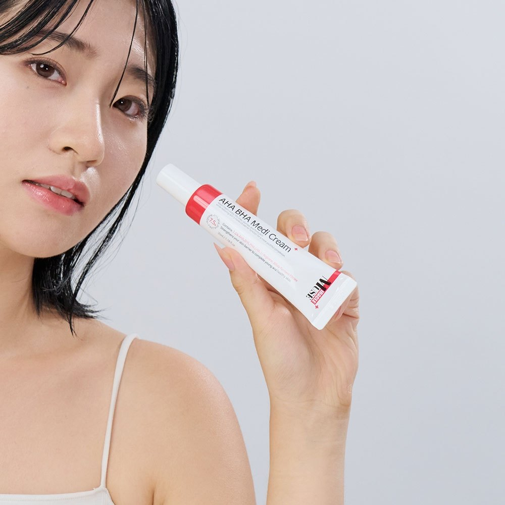
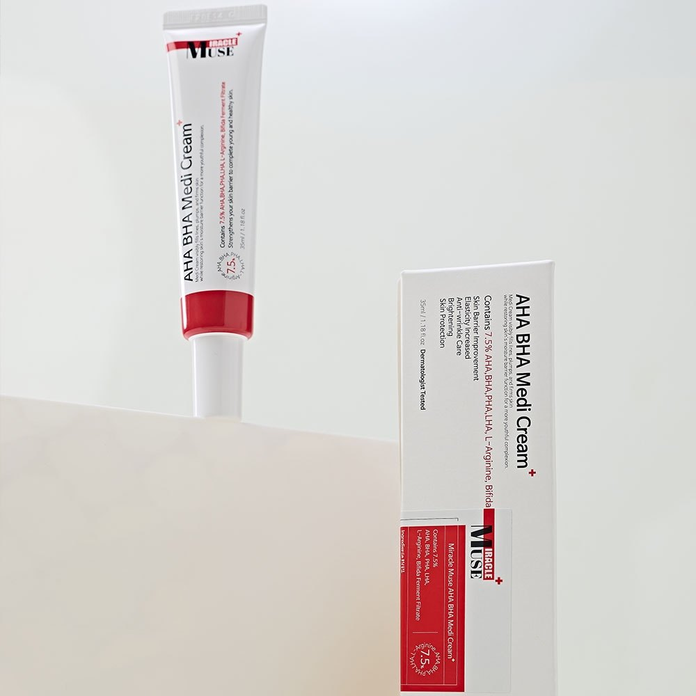
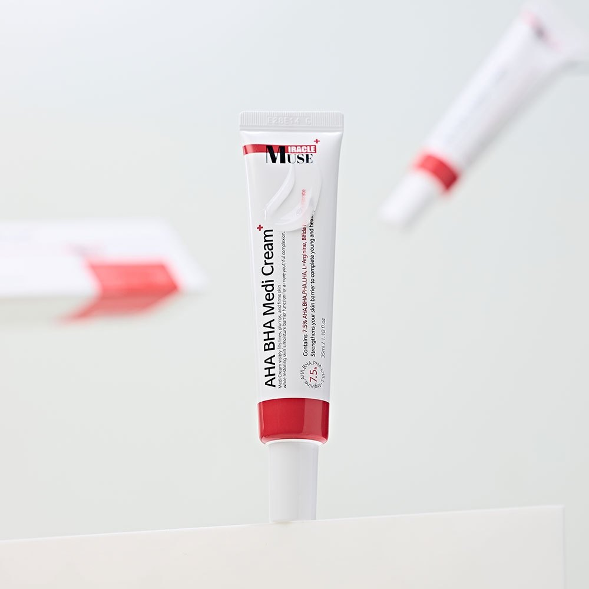
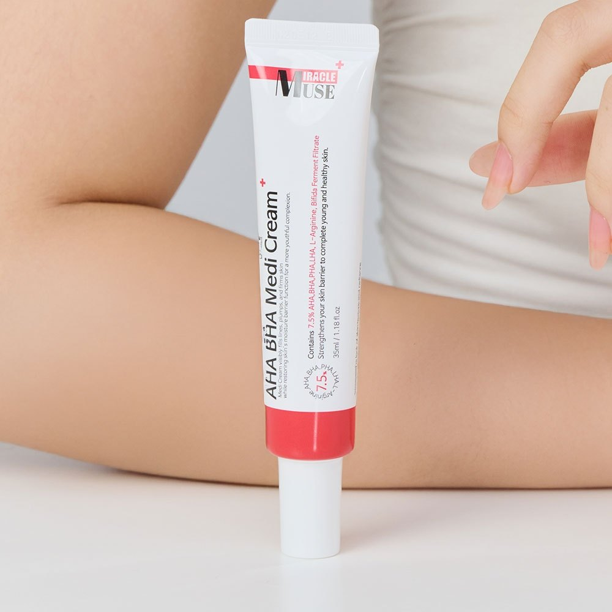

Miracle Muse AHA BHA Medi Cream Review at a Glance
This Miracle Muse AHA BHA Medi Cream review is for anyone looking for a gentle Korean cream for dark spots, dullness and uneven tone. Miracle Muse (미라클뮤즈) is a small Korean skincare brand, and its AHA BHA Medi Cream comes in slim white-and-red 35ml tubes. In Korea it's often sold as a set of four.
Its Korean listing registers it as a dual-function cosmetic for brightening and wrinkle care. It's marketed for the look of dark spots and pigmentation, with a low-irritation formula that absorbs quickly and doesn't feel sticky.

What the Cream Is Made For
The idea is simple: one tube for the two things many people want to fix after their 20s, uneven tone and fine lines. In Korea, a "dual-function cosmetic" (기능성 화장품) is a product registered for specific benefits, here brightening and wrinkle improvement.
| Your Concern | What the Listing Says |
|---|---|
| Dark spots and uneven tone | Brightening (registered functional claim) |
| Fine lines | Wrinkle care (registered functional claim) |
| Sensitive skin | Low-irritation formula that doesn't sting |
| Sticky creams | Absorbs without stickiness; works before makeup |


The product name refers to AHA and BHA, which are exfoliating acids. We don't list exact ingredient percentages here because the listing we checked doesn't publish them. Check the full ingredient list on your box.
Key Details
| Item | Details |
|---|---|
| Brand | Miracle Muse (미라클뮤즈) · Korea |
| Product | AHA BHA Medi Cream |
| Size | 35ml per tube (Korean set of 4) |
| Type | Dual-function cosmetic: brightening + wrinkle care |
| Texture | Soft white cream that absorbs without stickiness |
| Skin Type | All skin types; listing says low-irritation |
| When | Night, or morning under makeup with sunscreen |


Photo note: These are the 5 real product photos from the Korean listing. We didn't add any AI-generated images.
How to Use It
- Patch test first: Try a small amount on your jawline for 2–3 nights.
- After toner or serum: Use a pea-sized amount for your whole face.
- Focus on spots: Pat a little extra on dull areas and fine lines.
- Start slowly: Every other night for the first week, then nightly if your skin is happy.
- Sunscreen every morning: Brightening care works best when you protect your skin from new spots.
Pros & Cons
✅ Pros
- Brightening and wrinkle care in one registered functional cream.
- Low-irritation formula that the listing says doesn't sting.
- Light and non-sticky, so it works under makeup.
- Slim 35ml tubes: easy to travel with, and the set lasts a long time.
⚠️ Cons
- It's a cosmetic: results are gradual and it won't remove melasma.
- The listing doesn't publish ingredient percentages.
- Small brand: harder to find outside Korea.
- Acid-based care needs daily sunscreen.
Who It Suits (and Who Should Skip It)
- Great for: Anyone with dullness, uneven tone or post-blemish marks who wants a gentle daily cream.
- Great for: People who want one product instead of separate brightening and anti-wrinkle steps.
- Maybe skip: If you already use strong retinoids or peels (don't stack too many actives), or if your skin is reacting right now.
Miracle Muse Medi Cream FAQ
What is Miracle Muse AHA BHA Medi Cream?
It's a Korean face cream from the brand Miracle Muse (미라클뮤즈), sold in Korea as a set of four 35ml tubes. The listing registers it as a dual-function cosmetic for brightening and wrinkle care, aimed at dark spots and uneven tone.
Is it a medicine for melasma?
No. Despite the word 'Medi' in the name, it's a cosmetic, not a drug. It can help the look of dull, uneven skin with steady use, but see a dermatologist for melasma or any spot that changes.
Is it okay for sensitive skin?
The listing calls it a low-irritation formula that doesn't sting. Because the name refers to AHA and BHA (exfoliating acids), patch test on your jawline for a few days first, and start with every other night.
Can I wear it under makeup?
Yes. Korean buyers say it absorbs without feeling sticky, so it works under morning makeup. If you use it in the morning, always finish with sunscreen.
AHA BHA Brightening Creams
Miracle Muse isn't widely sold on US Amazon. Browse similar Korean AHA BHA brightening creams.